To create a new debug configuration:
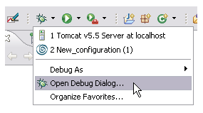
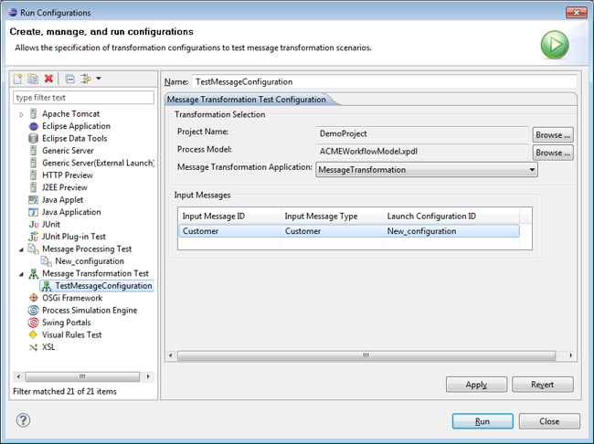
Figure: Starting the Debugger
To work in the debugger, switch to the Debug perspective:
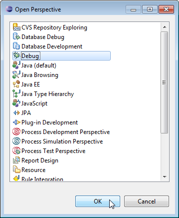
Figure: Open the Debug Perspective.
In the Message Transformation Debug View you can set or delete breakpoints and follow the debugging process in the Mapping Expression editor.
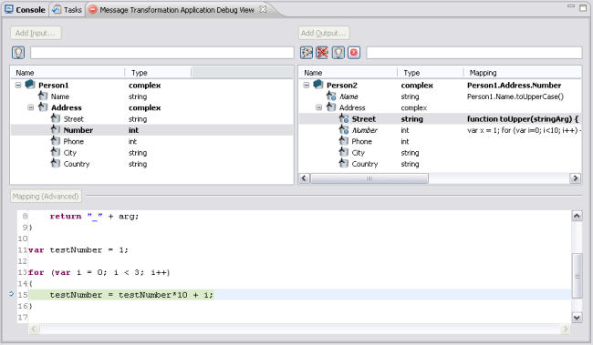
Figure: The Message Transformation Debug View
Breakpoints can be set at the following locations:
If breakpoints are set on a composite field of the target message, this will cause the debugger to stop at the first mapping statement (if defined) or the mapping expression of all (recursive) leaf fields of the composite field.
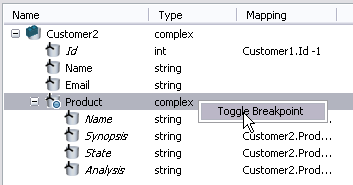
Figure: Setting a Breakpoint in a Composite Field
Setting breakpoints on a leaf field will cause the debugger to stop at the first mapping statement (if defined) or the mapping expression of the leaf field.
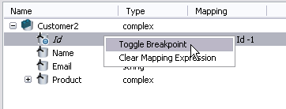
Figure: Setting a Breakpoint in a Composite Field
The Variable Watch view contains a tree table which displays the properties of all available variables and other tree entries showing the local variables.
The properties of the current object are displayed in the this tree entry. If a property is itself a JavaScript object, the property may be expanded to show its sub-properties. The entries in the this tree are updated each time control returns to the debugger or when you change the stack location in the Stack view.
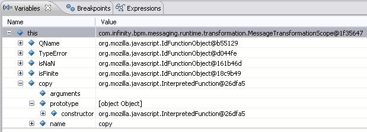
Figure: The this Variable Entry
The local variables of the current function are displayed in the other nodes in the variables view. If a variable is itself a JavaScript object, the variable may be expanded to show its sub-properties. The entries are updated each time control returns to the debugger or when changing the stack location in the Stack view.
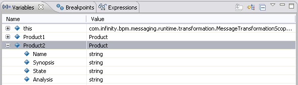
Figure: Local Variables Entry
The Expressions view provides the possibility to watch and evaluate variables and expression.
Arbitrary JavaScript expressions may be entered in the Expressions view. The expressions you enter are re-evaluated in the current scope and their current values are displayed each time when control returns to the debugger or when changing the stack location in the Stack view.
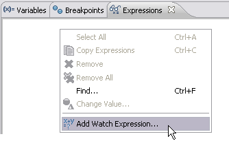
Figure: Add a Watch Expression
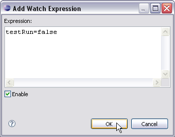
Figure: Enter an Expression.
The Expressions view contains an editable command line where you may enter arbitrary JavaScript code. The code is evaluated in the context of the current stack frame. The view maintains a history of the commands you have entered. You may move backward or forward through the history by pressing the Up or Down arrow keys on the keyboard.
The breakpoint view displays the breakpoints set for fields and expressions:
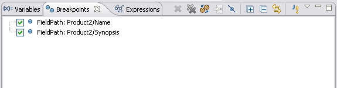
Figure: The breakpoint View
With the checkbox on the left side you can enable or disable a breakpoint.
Java exception breakpoints can be set for specific exceptions:
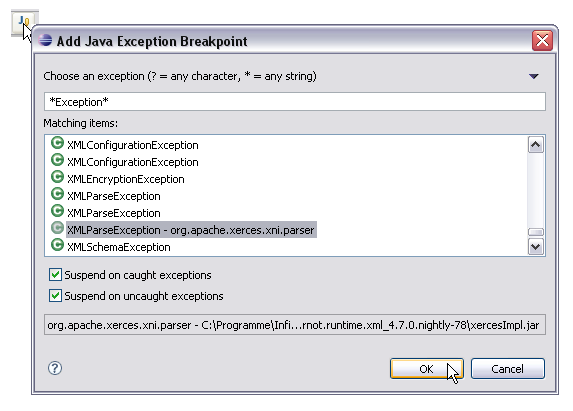
Figure: Choose a Java Exception to set as Breakpoint.
The Stack view displays the current JavaScript call stack.
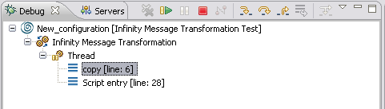
Figure: The Stack View
The debugger provides the following facilities to control the execution of scripts during debugging:
To single step entering any function calls, you may do any of the following:
Execution will resume. If the current line in the script contains a function call, control will return to the debugger upon entry into the function. Otherwise control will return to the debugger at the next line in the current function.
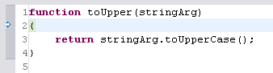
Figure: Stepping into a Function
To single step to the next line in the current function, you may do any of the following:
Execution will resume but control will return to the debugger at the next line in the current function or top-level script.
To continue execution until the current function returns you may do any of the following:
Execution will resume until the current function returns or a breakpoint is hit.
To resume execution of a script you may do any of the following:
Execution will resume until a breakpoint is hit or the script completes.
To stop all running scripts and give control to the debugger you may do any of the following:
To terminate the debugging process you may do any of the following:
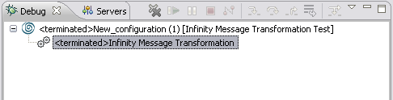
Figure: Terminated Process in the Stack View
To give control to the debugger whenever a JavaScript is exception is thrown, select the Run > Suspend on exceptions option from the menu bar. Whenever a JavaScript exception is thrown by a script a message dialog will be displayed and control will be given to the debugger at the location the exception is raised.
Right-click in the stack view and select Suspend on exceptions in the context-menu.
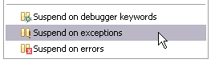
Figure: Suspend on Exceptions
{kind=link}
{kind=link}